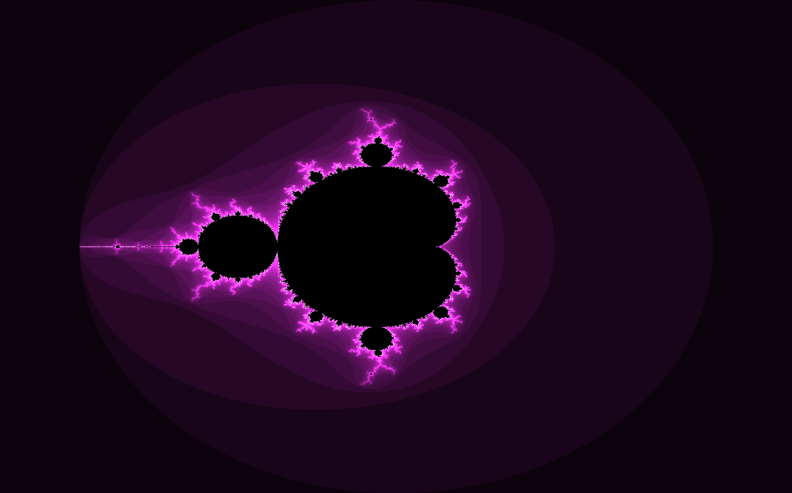
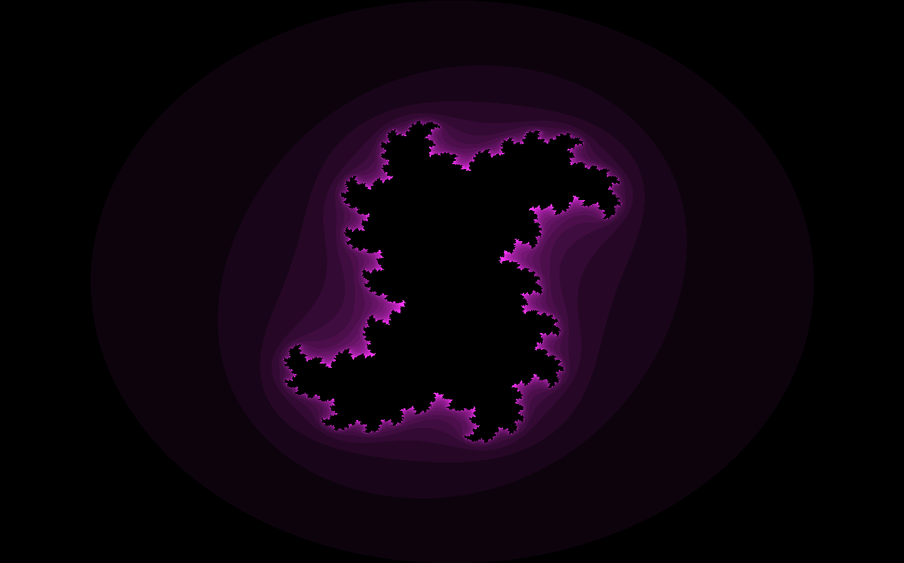
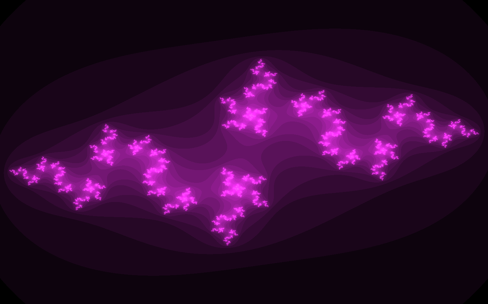
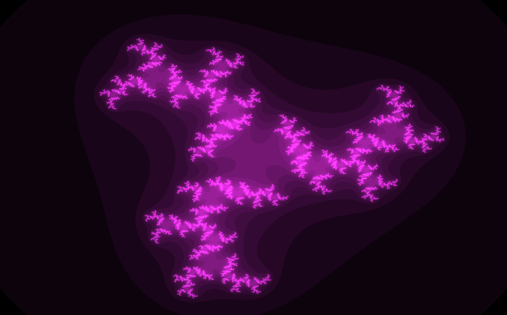

This is an interactive fractal generator that visualizes complex-plane functions in real time. Users can explore a huge variety of fractals by adjusting parameters like Z, C, exponent values, iteration depth, and zoom level.

I wanted to build a tool that makes fractals feel approachable, while still having mathematical flexibility. I wanted to support real-time rendering, smooth zooming, and custom formulas so users could discover patterns.
I implemented everything myself, including the complex-number math, the rendering engine, and the performance optimizations.


The project began as a basic complex-plane renderer, but quickly grew into a full parameterized engine. Much of the process focused on the escape-time algorithm and a canvas that could handle loops and zooms.
The generator produces a wide range of beautiful fractals, and users can tweak the parameters freely to create new fractals. It runs smoothly in the browser, and you can create some of the most popular fractals such as the Mandelbrot set, Julia set, and the burning ship.
